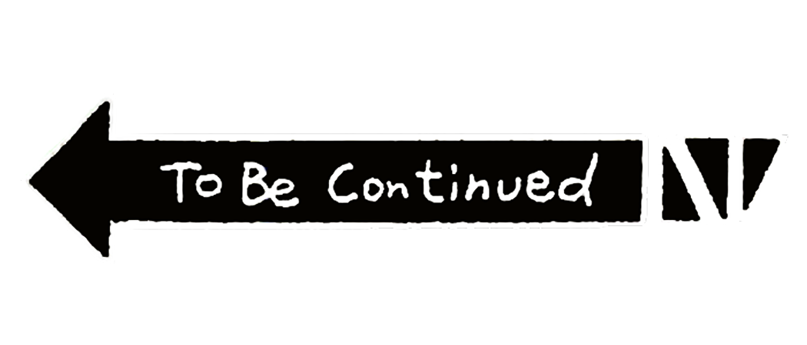

こんにちは、ザクザク食感です。
現在時刻：午前4時52分
最近極端に生活リズムが崩れている。4時くらいにやっと眠たくなって、8時半くらいに遅刻へのプレッシャーで目が覚めて、昼休憩の12時から13時まで眠って、18時の終業時間以降に数時間眠ったり眠らなかったり……の繰り返し。
在宅勤務の日は昼休憩で眠れるからまだいいけど、出社の日は眠れないし他人とコミュニケーション取らなきゃいけないしで最悪……
そして今日は出社の日で、あと2時間もしたら混雑率1500％くらいの電車に乗らなきゃいけない。本当に嫌だ～～～～～
電車に1時間弱乗る分にはいいが、人が多すぎて眠ることはもちろんスマホを見ることすら厳しい。
出社してもパソコン作業しかしないのにわざわざ出社させる意味が本当にわからない。新卒受け入れの人曰く親睦を深めるためらしい。笑
生活リズムの話に戻るが、変な時間にしか眠れないのもあってか最近は夢を見ることが多い。
今日は謎の宗教施設に僕が閉じ込められていて、脱出するために離陸直前の飛行機に飛び乗る夢を見た。飛行機に乗ったら客室乗務員さんに英語で問い詰められて、酸素マスクを渡された。
「見逃してくれるルートか！？」と思ってそのマスクをつけたら信じられないくらい冷たい空気が流れ込んできた。まずい！と思ってすぐにマスクを外したが、明らかに脳の回転が遅くなっているのがわかった。
思考に自分の言動がついていけなくて急に客観視点になる感じが妙にリアルで怖かった。ゴールド・エクスペリエンスに殴られたブチャラティってこんな感じだったのかな～みたいな。だとすると意識が加速しすぎて体が追いついてない方が正しいか。どうでもいいけど！
全身麻酔をしたことがないからどんな感覚か知らないけど、これだったらめちゃくちゃ嫌だなと思った。
目が覚めても冷たい空気の感覚が体に残っていてすごく嫌だった。最近はそんな夢ばっかり見る。
あと、話したいけどもう話せなくなってしまった人も夢によく出てくる。その夢のときは、強烈に拒絶される夢の場合と和解できた夢の場合があるが、どっちにしても寝覚めは悪い。
拒絶される夢の場合、言われていない言葉やされていない暴力を受けることが多くて、目覚めたときに本当に悲しい気持ちになる。
その人に救われた記憶が僕の支えになっていて今でも尊敬しているのに、夢では歪んだ形で出てくるのがすごく嫌だ。また話したいってずっと思ってしまうのが良くないのかな……
自分の脳が勝手に生みだしたもので自分を傷つけていて意味が分からない。そう考えると夢が何のシステムなのかも全くわからない。ビデオヘッドクリーナーを使ったときに流れる映像みたいな感じなのかな？
自分は生きづらい人間だな～と常々思う。もう少し大人にならなきゃいけないのかもしれない。
現在時刻：午前5時44分
あと15分で目覚ましが鳴る。それでも人生は続く！

それでは、さようなら。